ΠερίληψηAbstract
Τα δυναμικά μηχανικής μάθησης, όπως τα Gaussian Approximation Potentials (GAP; Bartók et al., 2010), προσεγγίζουν την κβαντομηχανική ακρίβεια με κόστος μικρότερο κατά τάξεις μεγέθους, μεταθέτουν όμως τον περιορισμό τους από την αναλυτική μορφή στα δεδομένα, των οποίων η επαναληπτική επιμέλεια απαιτεί χρόνο και εξειδίκευση. Εξετάζεται τι ακρίβεια προκύπτει χωρίς καμία επιμέλεια και τι την περιορίζει. Σύνολα εκπαίδευσης 50 έως 2.000 δομών αντλήθηκαν με στρωματοποιημένη τυχαία δειγματοληψία από την ίδια βάση δεδομένων 17.525 διαμορφώσεων άνθρακα από την οποία προήλθε με επιμέλεια το δημοσιευμένο δυναμικό GAP-20 (Rowe et al., 2020). Εκπαιδεύτηκαν 1.040 δυναμικά με περιγραφέα SOAP (Bartók et al., 2013), σε οκτώ ρυθμίσεις με δέκα επαναλήψεις ανά μέγεθος, και αξιολογήθηκαν σε κοινό σύνολο 203 δομών.
Το σφάλμα ενέργειας μειώνεται κατά 43% έως τις 700 περίπου δομές και αυξάνεται κατά 6,6% έως τις 2.000, όχι λόγω υπερπροσαρμογής αλλά εξαιτίας σπάνιων απωστικών δομών με ακραίες δυνάμεις, που εισέρχονται συχνότερα στα μεγαλύτερα σύνολα και υποβαθμίζουν την προσαρμογή. Η δεκαπλάσια χωρητικότητα (από 300 σε 3.000 αντιπροσωπευτικά σημεία) μειώνει το σφάλμα κατά 40,5%, όχι όμως τον ρυθμό αστοχίας στις απωστικές δομές, όπου και το GAP-20 έχει σφάλμα 33 φορές μεγαλύτερο απ’ ό,τι στις υπόλοιπες. Στις 116 δομές αξιολόγησης που δεν είδε ούτε το GAP-20, το καλύτερο δυναμικό φτάνει 0,0093 eV/άτομο έναντι 0,0103 του GAP-20, με 1.000 τυχαίες δομές αντί για 6.088 επιμελημένες (Σχήμα 1)· υπερέχει στις τεταγμένες και υστερεί στις άτακτες δομές.
Ο δεσμευτικός περιορισμός της ακρίβειας βρίσκεται επομένως στα δεδομένα, όχι στο μοντέλο· η επιμέλεια δεν είναι προαπαιτούμενο αλλά ένας από τους διαθέσιμους μοχλούς.
Machine learning potentials such as Gaussian Approximation Potentials (GAP; Bartók et al., 2010) approach quantum-mechanical accuracy at a cost orders of magnitude lower, but they shift their limitation from the functional form to the data, whose iterative curation demands time and expertise. We examine what accuracy is obtained without any curation, and what limits it. Training sets of 50 to 2,000 structures were drawn by stratified random sampling from the same database of 17,525 carbon configurations from which the published GAP-20 potential was curated (Rowe et al., 2020). We trained 1,040 potentials with the SOAP descriptor (Bartók et al., 2013), in eight model settings with ten repetitions per size, and evaluated them on a common set of 203 structures.
The energy error falls by 43% up to about 700 structures and then rises by 6.6% up to 2,000, not through overfitting but because of rare repulsive structures with extreme forces, which enter larger sets more often and degrade the fit. A tenfold increase in capacity (from 300 to 3,000 representative points) lowers the error by 40.5% but not the failure rate on the repulsive structures, where GAP-20, too, has an error 33 times larger than on the rest. On the 116 evaluation structures that neither model had seen, the best potential reaches 0.0093 eV/atom versus 0.0103 for GAP-20, using 1,000 random structures instead of 6,088 curated ones (Figure 1); it is better on ordered structures and worse on disordered ones.
The binding constraint on accuracy therefore lies in the data, not in the model; curation is not a prerequisite but one of the available levers.


Το posterThe poster
Τι ακρίβεια πετυχαίνει ένα δυναμικό μηχανικής μάθησης όταν οι δομές εκπαίδευσης αντλούνται τυχαία; What accuracy does a machine-learning potential reach when its training structures are drawn at random?
Με 1.000 τυχαίες, μη επιμελημένες δομές, ένα δυναμικό GAP φτάνει την ακρίβεια του GAP-20, που εκπαιδεύτηκε σε 6.088 επιμελημένες. With 1,000 random, uncurated structures, a GAP potential reaches the accuracy of GAP-20, which was trained on 6,088 curated ones.
6× λιγότερες δομές, χωρίς καμία επιμέλεια6× fewer structures, with no curation at all
Κάθε τετράγωνο: μία δομή εκπαίδευσης. Σφάλμα: διάμεσο (eV/άτομο) στις 116 δομές που κανένα από τα δύο μοντέλα δεν είδε· λόγος 0,90. Each square: one training structure. Error: median (eV/atom) on the 116 structures that neither model had seen; ratio 0.90.
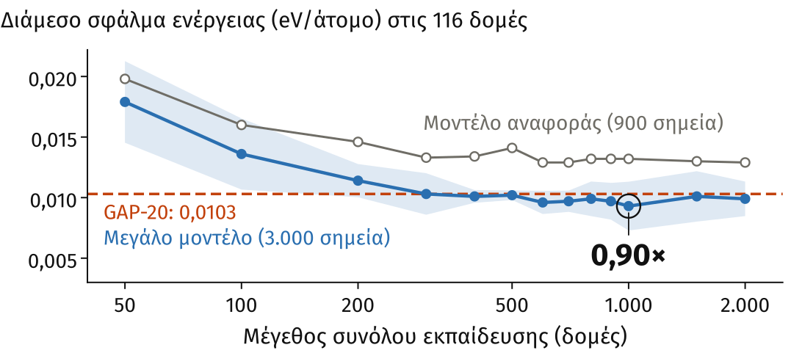
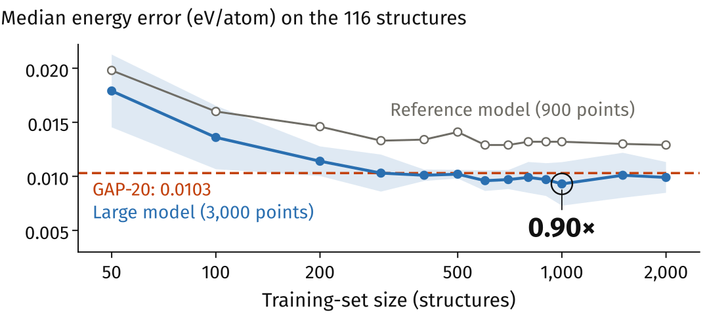
Πατήστε ένα σχήμα για να το δείτε σε πλήρες μέγεθος.Tap a figure to see it full size.
1 1.040 δυναμικά σε τυχαία δείγματα 50–2.000 δομών 1,040 potentials on random samples of 50–2,000 structures
Τα δυναμικά μηχανικής μάθησης (εδώ GAP με περιγραφέα SOAP) δίνουν ενέργειες DFT με κόστος μικρότερο κατά τάξεις μεγέθους· την ακρίβειά τους την ορίζουν οι δομές εκπαίδευσης. Machine-learning potentials (here GAP with the SOAP descriptor) give DFT energies at a cost orders of magnitude lower; their accuracy is set by the training structures.
8 ρυθμίσεις × 13 μεγέθη × 10 επαναλήψεις = 1.040 8 settings × 13 sizes × 10 repeats = 1,040
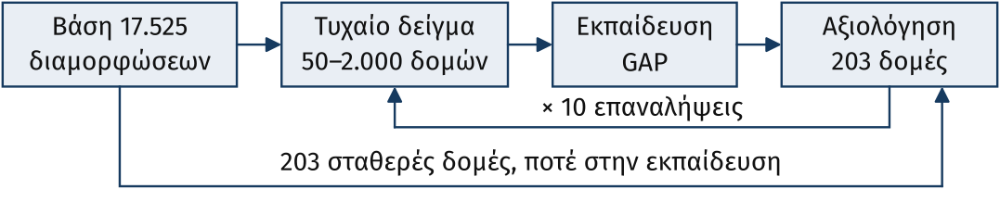
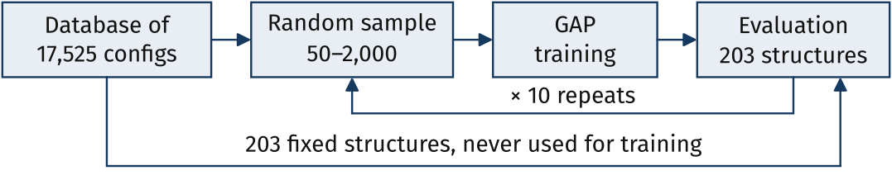
2 Η καμπύλη κρύβει 3 απωστικές δομές, 14–48× χειρότερες The curve hides 3 repulsive structures, 14–48× worse
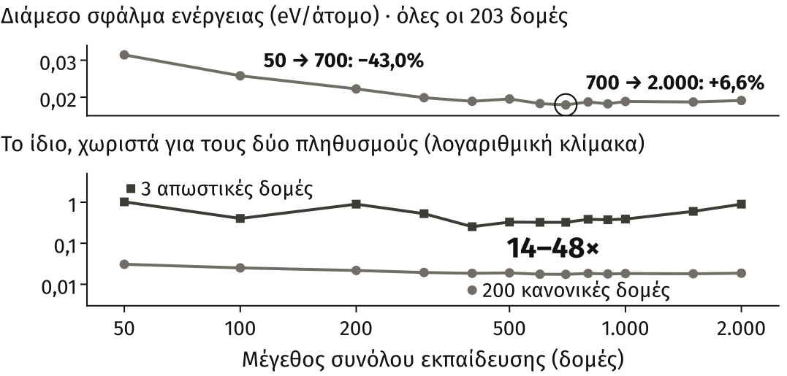
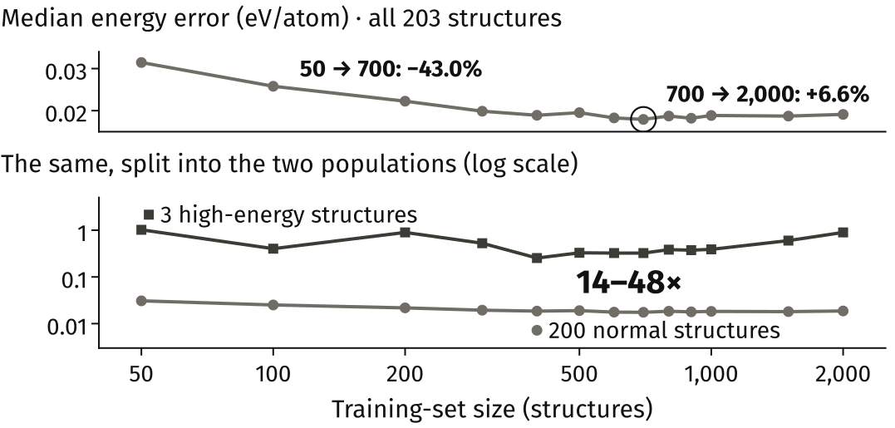
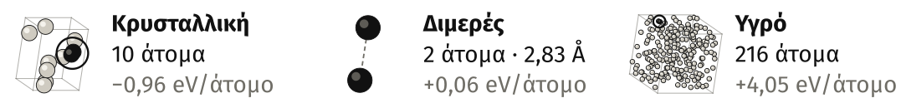
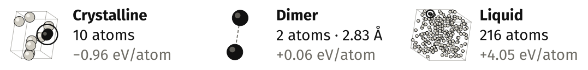
3 Τρεις ανεξάρτητες ενδείξεις: το όριο είναι στα δεδομένα Three independent lines of evidence: the limit is in the data
αa Μεγαλύτερο μοντέλο: καλύτερο στις κανονικές, όχι στις απωστικές A larger model: better on the normal structures, not on the repulsive ones

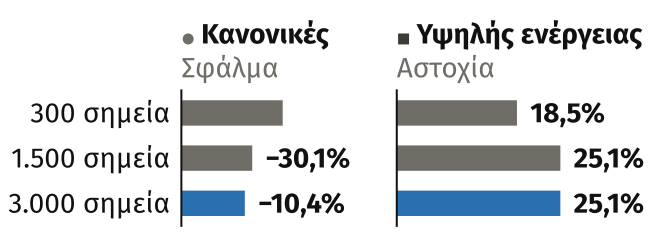

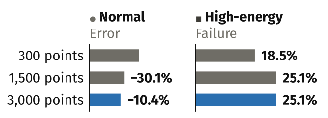
βb Άλλη εκπαίδευση: ό,τι κερδίζουν οι κανονικές το χάνουν οι απωστικές Different training: what the normal structures gain, the repulsive ones lose

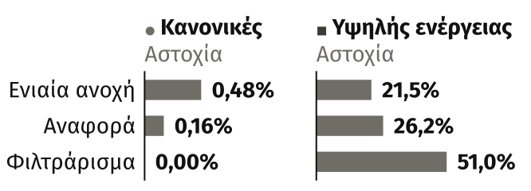

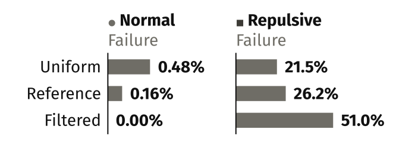
γc Το GAP-20 αποτυγχάνει στις ίδιες δομές GAP-20 fails on the same structures

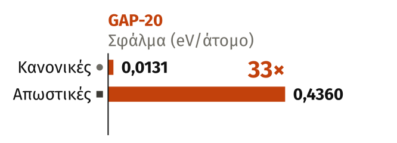

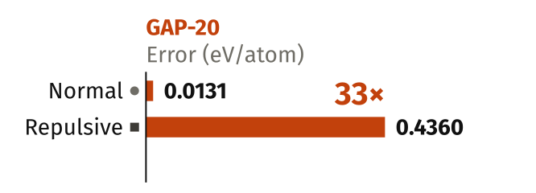
Σε μη επιμελημένη βάση, την ακρίβεια την περιορίζουν τα δεδομένα, όχι το μοντέλο.Η επιμέλεια δεν είναι προαπαιτούμενο, αλλά ένας από τους μοχλούς. On an uncurated database, accuracy is limited by the data, not by the model.Curation is not a prerequisite, but one of the levers.
Επόμενο βήμα: περισσότερες απωστικές δομές στην εκπαίδευση, με ενεργή μάθηση από τη διαφωνία μιας επιτροπής μοντέλων. Next step: more repulsive structures in training, through active learning driven by the disagreement of a committee of models.
Περιορισμοί: μόνο 3 απωστικές δομές αξιολόγησης· η αξιολόγηση προέρχεται από την ίδια βάση με τα δείγματά μας, άρα το 0,90 είναι ένδειξη ισοδυναμίας. Limitations: only 3 repulsive evaluation structures; the evaluation set comes from the same database as our samples, so the 0.90 is an indication of equivalence.
ΑναφορέςReferences
- Bartók, A. P., Payne, M. C., Kondor, R., & Csányi, G. (2010). Gaussian approximation potentials: The accuracy of quantum mechanics, without the electrons. Physical Review Letters, 104(13), 136403. https://doi.org/10.1103/PhysRevLett.104.136403
- Bartók, A. P., Kondor, R., & Csányi, G. (2013). On representing chemical environments. Physical Review B, 87(18), 184115. https://doi.org/10.1103/PhysRevB.87.184115
- Rowe, P., Deringer, V. L., Gasparotto, P., Csányi, G., & Michaelides, A. (2020). An accurate and transferable machine learning potential for carbon. The Journal of Chemical Physics, 153(3), 034702. https://doi.org/10.1063/5.0005084
ΕπικοινωνίαContact
Ερωτήσεις ή σχόλια για την εργασία; Γράψτε μου. Questions or comments about the work? Write to me.
chalchri@chem.auth.grΕυχαριστούμε το Κέντρο Ηλεκτρονικής Διακυβέρνησης ΑΠΘ για την υποδομή «Αριστοτέλης». We thank the IT Center of AUTh for the “Aristotle” computing infrastructure.